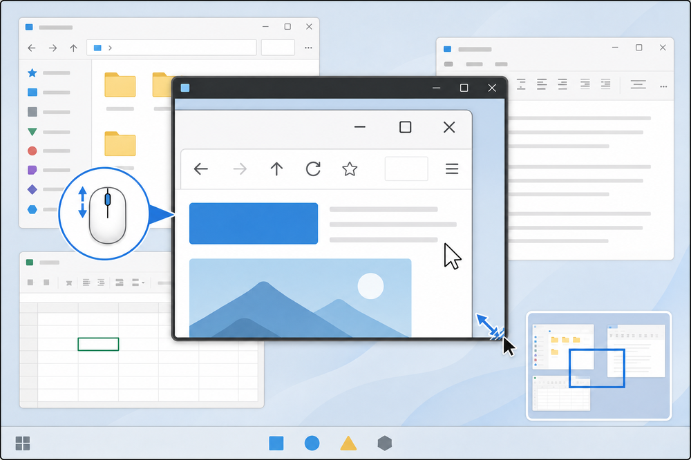
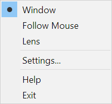
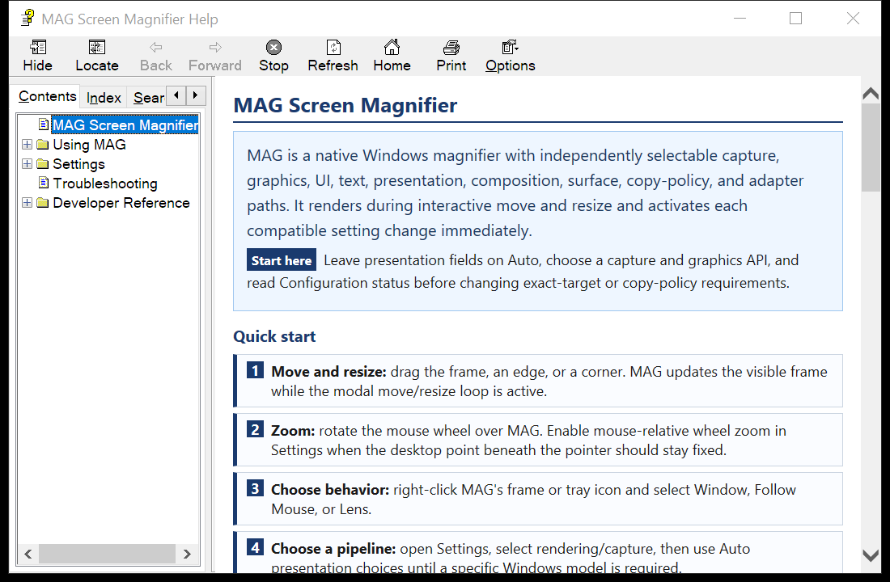

MAG is a native Windows magnifier with independently selectable capture, graphics, UI, text, presentation, composition, surface, copy-policy, and adapter paths. It renders during interactive move and resize and activates each compatible setting change immediately.
Start here Leave presentation fields on Auto, choose a capture and graphics API, and read Configuration status before changing exact-target or copy-policy requirements.

Core interaction: wheel to zoom, frame to move, edges/corners to resize, and the minimap source rectangle to pan.
|
 MAG context menu: one flat list for the three modes, Settings, Help, and Exit. The current mode is checked. |
 Compiled Help: Contents provides the guided structure; Index locates named APIs/features; Search covers every topic and embedded source page. |
| Mode | Behavior | Return path |
|---|---|---|
| Window | The source normally follows MAG's screen position. At 1.0×, it aligns with the desktop behind the window unless minimap panning pins another origin. | Select Window from the context menu. |
| Follow Mouse | MAG remains stationary while the captured source follows the pointer. | Press Space or select Window. |
| Lens | A topmost, non-activating, click-through magnifier follows the pointer so input reaches the application below. | Use the tray icon menu to select another mode. |
| Controls and Shortcuts Move, resize, zoom, minimap, tray, keyboard, and all three modes with real MAG mode captures. |
Context Menu and Help Every command, the active-mode check, and Contents/Index/Search navigation. |
| Settings Reference The interactive Route DAG, immediate changes, Auto/Custom preset behavior, valid ranges, compatibility reasons, and persistence. |
Capture and Rendering All capture, graphics, UI, and text choices with their exact MAG dropdowns. |
| Presentation and Composition Every presentation model, surface, host, copy class, alpha mode, adapter, buffer, latency, sync, and tearing setting. |
Windows Graphics Architecture DXGI, DWM Private Visual, DirectComposition, WDDM/drivers, D3D9/11/12, D2D, DWrite, OpenGL, Vulkan, GDI, and GDI+ diagrams. |
| Troubleshooting Rejected combinations, blank/stale output, flicker, performance, adapter changes, startup, and settings reset. |
Embedded Source Code The current project-owned C, headers, resources, renderer backends, presentation code, and private-visual implementation. |